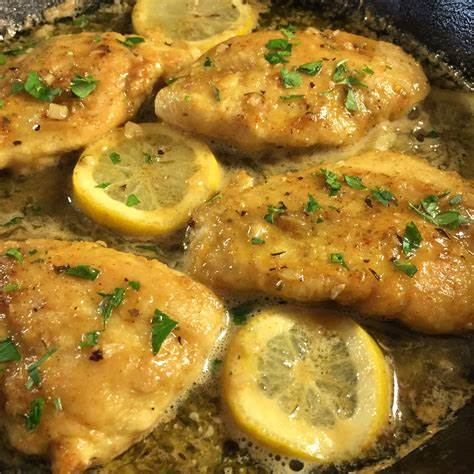

Lemon Garlic Butter Chicken
What is Lemon Garlic Butter Chicken?
Lemon Garlic Butter Chicken is a delicious and easy-to-make dish that is perfect for a quick weeknight dinner or a special occasion.
Ingredients
4 boneless, skinless chicken breasts
1/2 cup all-purpose flour
1/2 cup grated Parmesan cheese
1/2 tsp garlic powder
1/2 tsp Italian seasoning
Salt and pepper to taste
2 large eggs
2 Tbsp olive oil
4 Tbsp unsalted butter
4 garlic cloves, minced
1/4 cup fresh lemon juice
1/4 cup chicken broth
1/4 tsp red pepper flakes (optional)
Lemon slices and chopped parsley for garnish
Instructions / How to Cook
1. Preheat oven to 400°F.
2. In a shallow dish, whisk together eggs, garlic, Italian seasoning, salt, and pepper.
3. In another shallow dish, mix together the parmesan cheese and flour.
4. Coat each chicken breast in the egg mixture, then generously coat in parmesan mixture, shaking off excess.
5. Heat olive oil in a large oven-safe skillet over medium-high heat. Add chicken and cook until golden brown, about 4-5 minutes per side.
6. Transfer skillet to the oven and bake for 10-12 minutes, or until the internal temperature of the chicken reaches 165°F.
7. Remove skillet from oven and transfer chicken to a plate.
8. In the same skillet, melt butter over medium heat. Add garlic and cook until fragrant, about 1 minute.
9. Whisk in lemon juice, chicken broth, and red pepper flakes (if using). Cook until sauce has thickened slightly, about 2-3 minutes.
10. Return chicken to skillet and spoon sauce over the top. Garnish with lemon slices and chopped parsley.